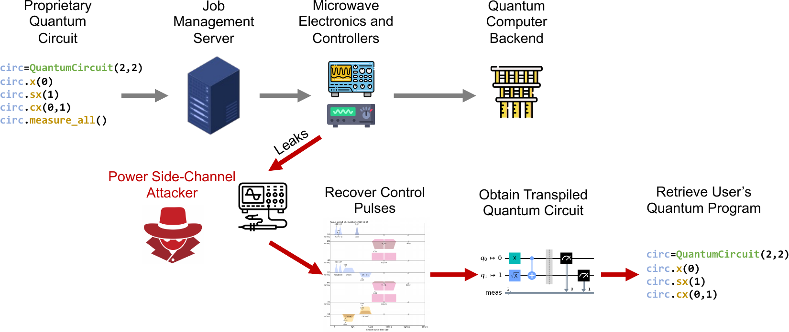
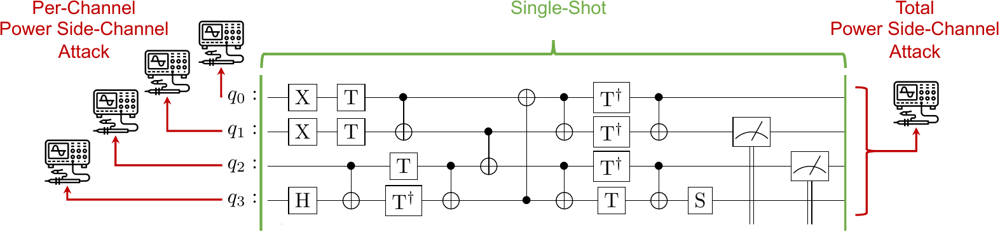

September 2024 · CHES 2024 (IACR TCHES)
Quantum Circuit Reconstruction from Power Side-Channel Attacks
Quantum Circuit Reconstruction from Power Side-Channel Attacks on Quantum Computer Controllers appeared in IACR TCHES 2024. Joint work with Chuanqi Xu, Ruzica Piskac, and Jakub Szefer (Yale).

Quantum computers currently reach users as cloud services — IBM Quantum, Amazon Braket, Microsoft Azure. Users have no control over the physical space where the machines sit, and the threat of malicious insiders inside a data centre is well-established in classical security. What we show in this paper is that the controller electronics — the microwave arbitrary-waveform generators that sit between the classical job-management server and the superconducting qubits — are a practical physical-side-channel surface. Measure their power consumption, and you can recover the quantum circuit being executed.
Unlike direct measurement of the qubits (which would destroy the quantum state and therefore self-defeat), the control pulses are fully classical signals. They can be spied on. This paper formalises the attack, then demonstrates two concrete single-trace reconstruction methods.
Two attacker models

The per-channel attack assumes the adversary can physically tap each qubit's control channel. It decomposes the recovery into independent single-channel problems and is essentially a brute-force match against a gate-pulse library.
The total-power attack is the tighter threat model: the adversary sees one aggregated power trace for the whole machine. We formulate recovery as a Mixed-Integer Linear Program (MILP) over a LIRA constraint system that captures when each gate could be active and which qubits it touches. Solving the MILP yields the most likely circuit schedule consistent with the observed trace.
Results
We evaluated both attacks on 32 circuits from the QASMBench benchmark suite, using real control-pulse information from IBM quantum computers. Both attacks reconstruct circuits with high fidelity. The total-power attack is the more surprising result: the adversary only needs a single scalar-valued power trace to reverse-engineer the algorithm running on the machine.
Why it matters
Quantum circuits encapsulate both the algorithm and its hard-coded inputs. An attacker who can recover portions of the circuit misappropriates the intellectual property and the data. Variational algorithms like QAOA are especially sensitive: even leaking the qubit count and circuit depth tells an attacker a lot about what is being computed. A 2022 National Quantum Coordination Office workshop explicitly flagged formal methods as a tool to address this class of threat, and this work operationalizes that direction: the reconstruction is driven by SMT solving (LIRA) and MILP, not heuristics, so we can characterize when the attack succeeds and what it takes to defeat it.
Lessons from classical systems suggest unchecked side-channel vulnerabilities compound over time. Speculative-execution attacks (Spectre, Meltdown) were operational since the 1990s but not publicly recognized until 2018. Identifying quantum controller side-channels in the infancy of cloud quantum computing gives the community a chance to design in countermeasures rather than retrofit them.